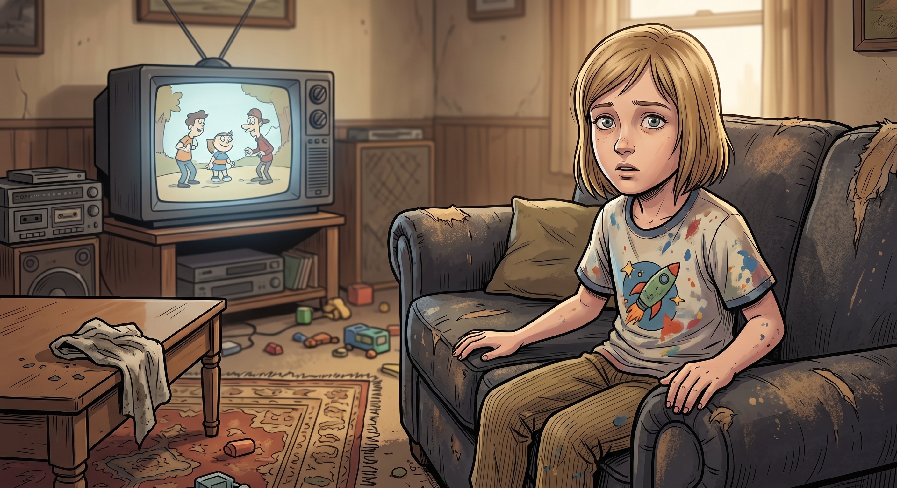

希望郡

過了愛達荷邊界沒多久,收音機開始出問題。
Chloe 正在轉台找信號,朋克搖滾的雜訊裡忽然插進一段空靈的吟唱,像教堂唱詩班,又帶著一種說不出的違和感。她皺眉又轉了兩次,每個頻道最後都被同一段聖歌蓋過去。
「這什麼鬼玩意。」她關掉收音機。
車窗外,雪山很美,藍得不真實。但公路邊每隔幾英里就出現一輛噴著白色十字架標誌的皮卡,車斗上坐著扛步槍的人,遠遠盯著她們的車經過。有一棵孤零零的樹上,掛著一塊木牌,上面的字被雨水沖得模糊,但輪廓看起來像是名字,和某種倒數的日期。
Max 沒有拍照。她把相機放低,握著方向盤的手有點緊。
「Chloe,我們要不要調頭。」
「調頭去哪?波特蘭嗎?」Chloe 從後照鏡看了一眼那棵樹,沒再說話。
一、亨本河
她們是在加油站被攔下的。
不是暴力攔截——是那種更讓人發毛的方式:三個穿著素色襯衫、笑容溫和過頭的年輕人圍上來,遞給她們兩杯裝在紙杯裡的茶,說是「歡迎迷途的旅人」。
Chloe 下意識想罵人,話到嘴邊卻莫名其妙軟了下去,喉嚨發緊,像是有什麼東西堵住了她的憤怒。她低頭看那杯茶,冒著白色的煙。
「別喝。」Max 一把打掉她手裡的紙杯。
太遲了半秒——Chloe 已經嗅進了一口飄散在空氣中的甜膩氣味,那是揉進了風裡的「極境」。
她眼前的景象開始扭曲。加油站的招牌融化成波浪狀,那三個年輕人的笑臉拉長、變形,遠處雪山的顏色變得不對勁,像打翻的水彩。
「Chloe!」Max 抓住她的手臂,想把她拖回車上,但 Chloe 的腿已經軟了,整個人像被抽走了骨頭一樣往下滑。
二、父親
Chloe 睜開眼睛的時候,她在自己家的客廳裡。
不是現在的家。是很多年前的家——電視還開著,放的是她小時候看的卡通,沙發還是那張已經被丟掉很多年的舊沙發,聞起來有淡淡的汽車機油味。
「小丑魚。」
那個聲音讓她整個人僵住。
William 坐在沙發上,穿著她記憶裡最後一次見到他的那件襯衫,朝她笑,眼睛裡是她已經快要記不清楚、卻又無比熟悉的溫柔。
「爸?」她的聲音抖得不成樣子。
「妳長這麼大了。」William 拍拍身邊的沙發,「過來坐,我等妳好久了。」
Chloe 的腳不由自主地往前走。她知道——某個很深的地方她知道——這不是真的。但她已經很久很久沒有這種感覺了,那種被父親接住的、不用武裝自己的安全感,久到她幾乎忘記自己曾經擁有過。
「爸爸,我……」她哽咽了,「我這幾年真的一團糟。我讓 Max 一次次為了我搞得遍體鱗傷,我讓媽媽操碎了心,我還——」
「妳做得很好。」William 打斷她,笑容毫無瑕疵地溫柔,「留在這裡吧,小丑魚。這裡沒有風暴,沒有暗房,沒有繼父的監視器。只有我們。」
Chloe 的眼淚流下來。她的手已經伸出去,幾乎要碰到父親的手——
客廳的一角,沙發旁邊的陰影裡,忽然多了一個人影。
Rachel Amber 靠在牆邊,雙手插在口袋裡,用一種混合著心疼和無奈的表情看著她。
「妳真的要留在這裡?」Rachel 開口,聲音和記憶裡一模一樣,「跟一個不是真的的爸爸,坐在一個不是真的的房間裡?」
「Rachel——」
「我也很想留在某個地方,Chloe。」Rachel 的聲音忽然變得很輕,「但我沒得選。妳有。」
Chloe 的手停在半空中,指尖離父親的手只剩幾公分。
「爸爸不是真的。」她喃喃地說,像是在說服自己,「我知道他不是真的。」
「那妳還不放手?」Rachel 往前走了一步,「妳一直說想要有人陪妳走出阿卡迪亞灣。她現在就在外面,拚了命想把妳拖回來。妳要在這裡跟一個回憶耗一輩子,還是回去陪那個真正還活著、還在乎妳的人?」
William 的臉開始出現裂痕,像壁紙起皮一樣,底下露出的不是皮膚,是一種蠕動的灰霧。
「小丑魚,留下來……」那個聲音開始扭曲,不再是溫柔,而是某種空洞的、重複播放的錄音。
Chloe 猛地把手收回來。
三、拉扯
外面的世界裡,Max 跪在 Chloe 身邊,一次又一次地倒流時間。
她已經數不清這是第幾次了。
第一次,她試著把 Chloe 拖回車上,失敗——Chloe 的身體軟得像沒有骨頭,眼神渙散地望著虛空,嘴裡喃喃叫著「爸爸」。倒流。
第二次,她試著打 Chloe 一巴掌讓她清醒,Chloe 毫無反應,瞳孔對光沒有收縮。倒流。
第三次,她翻遍車上的急救包,找不到任何解毒的東西,只能眼睜睜看著時間一分一秒過去,而她的鼻血已經開始不受控制地往下滴,滴在 Chloe 蒼白的臉頰上。
倒流第四次的時候,Max 的太陽穴傳來一陣尖銳到讓她眼前發黑的刺痛——這不是普通的頭痛,這是她的能力在警告她,再用下去會出事。
「求求妳,」Max 抱著 Chloe 的身體,聲音已經帶著哭腔,「求求妳醒過來,我沒辦法再倒流了,我真的沒辦法再——」
她的鼻血滴在自己的手背上。眼前的世界開始出現雪花般的雜訊,像壞掉的電視訊號——這是能力即將耗盡的徵兆,她自己心裡清楚。如果 Chloe 現在還醒不過來,她連再試一次的機會都沒有了。
「Chloe。」Max 把額頭抵在 Chloe 的額頭上,聲音抖得不成樣子,「妳聽得到嗎?是我。是 Max。妳答應過我要陪我去波特蘭,妳答應過要陪我看遍所有還沒看過的地方——妳不能食言,妳從來沒有食言過。」
四、抉擇
客廳裡,William 的臉已經完全裂開,底下是無盡的灰色迷霧,那個聲音還在重複著同一句話,越來越像機械噪音。
Rachel 站在原地,對 Chloe 露出一個很輕、很釋然的笑。
「去吧。」她說,「這次換妳好好活下去了,替我。」
Chloe 猛地轉身衝向那扇本來不存在、此刻卻莫名出現在牆上的門。她撞開門的瞬間——
眼皮猛地睜開。
Chloe 大口喘著氣,眼前是 Max 沾滿淚水和血的臉,近得幾乎貼在一起。
「Max……」她的聲音沙啞得不像自己的,「妳的鼻子在流血。」
「妳終於醒了。」Max 幾乎是崩潰地笑出來,一邊笑一邊哭,「妳這個混蛋,妳知道妳嚇死我了嗎——」
Chloe 想抬手抱她,手臂卻軟得抬不起來。就在這時,遠處傳來引擎的轟鳴聲——不是一輛,是好幾輛,伴隨著槍聲和爆炸的震動,由遠而近。
一輛塗裝斑駁、車頂架著機槍的皮卡從山坡另一側衝出來,車斗上一個戴著漁夫帽、滿臉硝煙的傢伙正對著追上來的邪教武裝車隊開火,旁邊還有一個抱著獵鷹的男人和舉著狙擊槍的女人。
「都趴下!」那個開車的人——後來 Chloe 才知道他們管他叫「郡警」——朝她們大喊,一邊猛打方向盤把追兵甩開一段距離。
Max 想都沒想,直接把 Chloe 半拖半抱地拉進自己的車裡,引擎發動的瞬間,那輛陌生的皮卡已經幫她們擋下了後方追來的兩輛邪教車。
五、拂曉
之後的事,Chloe 事後回想起來都像一團模糊的硝煙——皮卡狂飆過泥濘的山路,郡警的隊伍和她們的車一起甩開追兵,某個叫做「秋末鎮」的據點裡有人幫 Max 止住了鼻血,有人塞給 Chloe 一條毛毯和一杯不知道加了什麼但格外提神的黑咖啡。
David 是在通訊恢復後,用一種近乎瘋狂的效率殺過來的——他甚至沒等她們解釋完整件事,只留下一句「我就知道」,就已經在電話另一頭開始調度他準備了二十年的末日物資。等他真正的越野車衝進秋末鎮外圍的時候,天已經快亮了,他從駕駛座跳下來,一句話沒說,先把 Chloe 從頭到腳檢查了一遍,確認她真的沒事,才鬆了一口氣,罵罵咧咧地說了句聽起來像是在罵人、其實是在後怕的話。
Chloe 沒力氣跟他鬥嘴,只是靠在皮卡車輪胎上,看著雪山那邊天色一點一點亮起來。
Max 坐到她旁邊,把毛毯往她身上又裹緊了一點。
「妳看到什麼了?」Max 輕聲問。
Chloe 沉默了很久,久到 Max 以為她不會回答了。
「我看到我爸。」她終於說,聲音很輕,「他叫我留下來。」
Max 沒說話,只是握住她的手。
「Rachel 也在。」Chloe 抬起頭,望著漸漸染上金色的雪山稜線,「她叫我回來找妳。」
晨光終於漫過山頭,把兩人的影子拉得很長。遠處,David 正扯著嗓子跟秋末鎮的人爭論該怎麼加固防線,郡警和獵鷹蹲在一旁分著一根被搶救下來的煙。
Chloe 靠在 Max 肩膀上,閉上眼睛,第一次在這一整夜的瘋狂之後,感覺到一種近乎奢侈的安心。
「謝謝妳沒放棄倒流。」她小聲說。
「我永遠不會放棄。」Max 說,「就算能力用光了,我也會用跑的把妳拖出來。」
Chloe 笑了,笑聲裡帶著一點沒哭完的鼻音。
「那我們回家吧,」她說,「這次真的回家。」